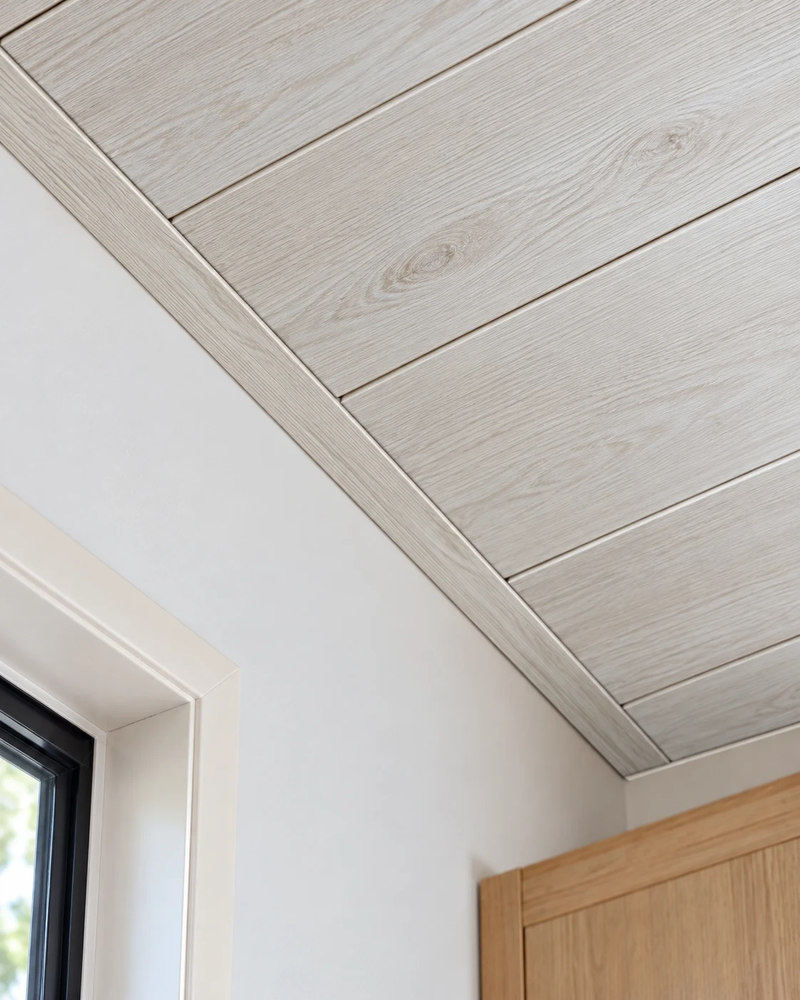

Perfil de terminación
Perfil U · 2,90 m
Pieza para terminación de machimbre pvc, agrupada por forma y formato. Elegí el color dentro de esta ficha: cada opción conserva su código de proveedor.
- Longitud
- 2,90 metros por tira
- Función
- terminación, unión y encuentro de machimbres
- Material
- resistente, duradero y de bajo mantenimiento
- Uso
- interior — hogares, comercios y oficinas
- Forma
- U
- Formato
- 2,90 m
- Aplicación
- Terminación de machimbre PVC
Disponibilidad FORMA: En stock
Consultar precio
Consultar por WhatsAppConfirmamos precio, disponibilidad y entrega antes de cerrar el pedido.